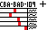

up is on
I hate to say it, but I might be beaten.
Have this image and use it as the last 5 digits, thats all puzzle 9 is: reaching the end. Puzzle 10 is then decifering what I R N a M. is, from its origin story is the final puzzle, but I have faith you can solve it.
